Chapter 7 · PDF 594–693
微调
Finetuning
通过调整权重适配模型 PDF 594–596
Introduction
微调（finetuning）是通过继续训练整个模型或模型的一部分，使模型适应特定任务的过程。第 5、6 章讨论了基于提示的方法：通过给模型提供指令、上下文和工具来适配模型；微调则通过调整模型权重来完成适配。
微调可以改善模型的多个方面。它既能提高编程、医学问答等领域专属能力，也能加强安全性。不过，微调最常用于提高指令遵循能力，特别是确保模型遵循指定的输出风格和格式。
微调能让模型更贴合你的需求，却也要求更多前期投入。作者经常听到的问题是：什么时候应微调，什么时候应使用 RAG？本章先概览微调，再讨论微调与不微调的理由，并给出一个简单框架，帮助在微调与替代方法之间做选择。
与基于提示的方法相比，微调的内存占用高得多。以今天基础模型的规模，朴素微调往往需要超过单张 GPU 所能提供的显存，因此既昂贵又困难。降低显存要求是许多微调技术的主要动机。本章会用一节梳理构成模型显存占用的因素，这是理解这些技术的基础。
PEFT（parameter-efficient finetuning，参数高效微调）是一种显存高效、并已在微调领域占据主导地位的方法。本章将探讨 PEFT 与传统微调的区别，概览不断发展的 PEFT 技术，尤其聚焦一类重要方法：基于适配器的技术。
使用基于提示的方法时，最好理解 ML 模型内部怎样运行，但这并非严格必需。微调却会把你带入模型训练领域，必须具备 ML 知识。ML 基础超出本书范围；想快速复习，可以查看本书 GitHub 仓库中列出的资源。本章只介绍与当前讨论直接相关的几个核心概念。
这是作者写作时技术挑战最大的一章，不是因为概念本身复杂，而是因为它们覆盖范围极广；阅读起来也可能具有挑战性。如果任何时候觉得细节过深、与自己的工作无关，完全可以跳过。
要讨论的内容很多，下面正式开始。
微调概览 PDF 596–602
Finetuning Overview
开始微调时，你先有一个已经具备一部分、但尚未具备全部所需能力的基础模型。微调的目标，是让这个模型在你的特定任务上表现得足够好。
微调是迁移学习的一种方式。迁移学习这一概念最早由 Bozinovski 和 Fulgosi 在 1976 年提出，关注如何把从一个任务获得的知识迁移出去，加速学习一个相关的新任务。这与人类迁移技能的方式相似：例如，会弹钢琴可能让人更容易学习另一种乐器。
迁移学习早期的大规模成功案例之一，是 Google 的多语言翻译系统（Johnson 等，2016）。模型把葡萄牙语—英语和英语—西班牙语翻译知识迁移到葡萄牙语—西班牙语直译上，尽管训练数据里没有任何葡萄牙语—西班牙语样本。
从深度学习早期开始，迁移学习就为训练数据有限或昂贵的任务提供了解法：先在数据丰富的任务上训练基础模型，再把知识迁移到目标任务。
对 LLM，在文本补全这种数据丰富的任务上预训练得到的知识，可以迁移到法律问答、文本转 SQL 等可用数据较少的专门任务。迁移学习能力让基础模型格外有价值。
迁移学习提高了样本效率，使模型能用更少样本学会相同行为。一个样本高效的模型，可以从较少样本中有效学习。例如，从零训练法律问答模型可能需要数百万个样本，而微调一个优秀基础模型可能只需要几百个。
理想情况下，模型需要学习的大部分内容已经存在于基础模型中，微调只是细化其行为。OpenAI 的 InstructGPT 论文（2022）建议把微调理解为：解锁模型已经拥有、却难以仅靠提示让用户访问的能力。
说明
微调并非迁移学习的唯一方式，另一种方式是基于特征的迁移。该方法训练模型从数据中提取特征——通常是嵌入向量——再交给另一个模型使用。第 2 章讨论通过添加分类器头、复用基础模型的一部分来完成分类任务时，简要提到过这种方法。
基于特征的迁移在计算机视觉中很常见。例如在 2010 年代后半期，许多人使用在 ImageNet 数据集上训练的模型提取图像特征，再把这些特征用于目标检测、图像分割等其他计算机视觉任务。
微调属于模型训练过程，是预训练的延伸。预训练之后发生的任何训练都可以算微调，因此微调有很多形式。第 2 章已经讨论了两种：监督微调和偏好微调。下面快速回顾这些方法，以及应用开发者可以怎样利用它们。
模型训练从预训练开始，通常采用自监督。自监督让模型从大量无标签数据中学习。对语言模型，自监督数据往往只是无需标注的文本序列。
在使用昂贵的任务专属数据微调预训练模型之前，可以先用便宜的任务相关数据进行自监督微调。例如，为法律问答微调模型时，在昂贵的带标注（问题，答案）数据之前，可以先用原始法律文档微调；为越南语书籍摘要微调时，可以先使用大规模越南语文本。自监督微调也叫持续预训练（continued pre-training）。
第 1 章提到，语言模型可以是自回归模型或掩码模型：自回归模型使用此前词元作为上下文预测下一个词元；掩码模型使用空缺前后的词元填空。类似地，监督微调既可以让模型预测下一词元，也可以让它填空。后者也叫填充微调（infilling finetuning），对文本编辑和代码调试尤其有用。即使模型采用自回归预训练，也可以进一步做填充微调。
模型在自监督学习中接触海量数据，从而获得对世界的丰富理解；但用户可能很难为自己的任务提取这些知识，模型行为也可能与人类偏好不一致。监督微调使用高质量带标注数据细化模型，使其符合人类使用方式和偏好。
监督微调使用（输入，输出）对训练模型：输入可以是指令，输出可以是回答。回答既可以是书籍摘要等开放式内容，也可以是分类任务的封闭式答案。高质量指令数据可能很难、也很昂贵，尤其当指令要求事实一致性、领域专业知识或政治正确性时。第 8 章讨论如何获得指令数据。
模型也可以通过强化学习微调，以生成最大化人类偏好的回答。偏好微调需要比较数据，通常采用（指令，胜出回答，落败回答）的格式。
还可以通过微调扩展模型的上下文长度。长上下文微调通常需要修改模型架构，例如调整位置嵌入。序列越长，词元可能出现的位置越多，位置嵌入必须能处理这些位置。与其他微调技术相比，长上下文微调更难，得到的模型在短序列上的表现也可能退化。
图 7-1 展示 Rozière 等（2024）怎样从基础模型 Llama 2 出发，使用不同微调技术得到不同 Code Llama 模型。他们通过长上下文微调把最大上下文长度从 4,096 个词元增加到 16,384 个，以容纳更长的代码文件。图中的“指令微调”指监督微调。
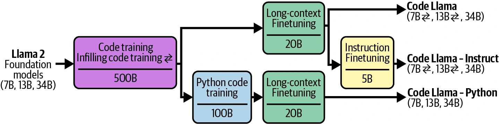
模型开发者和应用开发者都可以进行微调。模型开发者通常在发布模型之前，使用不同微调技术进行后训练；还可能发布微调程度不同的多个版本，让应用开发者选择最合适的版本。
应用开发者可以微调预训练模型，但更可能微调一个已经完成后训练的模型。模型越成熟、已有知识与任务越相关，适配时需要完成的工作就越少。
何时微调 PDF 602–617
When to Finetune
在深入各种微调技术之前，必须先考虑微调是不是正确选择。与基于提示的方法相比，微调需要多得多的资源，不仅是数据和硬件，也包括 ML 人才。因此，通常是在对基于提示的方法做了充分实验之后才尝试微调。不过，微调与提示并不互斥，现实问题常常需要二者共同工作。
微调的理由 PDF 602–604
Reasons to Finetune
微调的首要理由是提高模型质量，包括通用能力和任务专属能力。微调常用于提高模型按 JSON、YAML 等特定结构生成输出的能力。
一个在广泛基准上表现良好的通用模型，不一定能做好你的特定任务。如果想使用的模型没有在该任务上接受充分训练，使用你的数据微调会特别有用。
例如，一个开箱即用的模型可能善于把文本转换为标准 SQL 方言，却处理不好不常见的 SQL 方言；用包含这种方言的数据微调就会有帮助。类似地，模型可能能用标准 SQL 处理常见查询，却经常在客户专属查询上失败；使用客户专属查询微调可能改善表现。
微调一个特别有趣的用例是缓解偏见。基本想法是：如果基础模型延续了训练数据中的某些偏见，在微调阶段让它接触精心整理的数据，可以抵消这些偏见（Wang 与 Russakovsky，2023）。例如，模型若总给 CEO 分配听起来像男性的名字，就可用包含大量女性 CEO 的数据集微调。Garimella 等（2022）发现，在女性作者文本上微调 BERT 类语言模型能降低性别偏见，在非洲作者文本上微调则能降低种族偏见。
可以微调大模型，让它变得更好，但微调小模型更常见。小模型显存需求低，更容易微调，在生产中也更便宜、更快。
一种常见做法是使用大模型生成的数据，微调小模型来模仿大模型行为。由于这种方法把大模型的知识“蒸馏”进小模型，所以称为蒸馏（distillation）。第 8 章会把它与其他数据合成技术一起讨论。
在特定任务上微调的小模型，可能胜过大得多的开箱即用模型。例如 Grammarly 发现，在广泛的写作助手任务上，微调后的 Flan-T5 模型（Chung 等，2022）胜过专门用于文本编辑的 GPT-3 变体，尽管前者小 60 倍。微调只使用了 82,000 个（指令，输出）对，比从零训练文本编辑模型通常需要的数据还少。
基础模型早期，最强模型都是商业模型，微调访问受限，几乎没有具有竞争力的模型可供微调。随着开源社区涌现各种规模、面向多种领域的高质量模型，微调已经变得可行且更有吸引力。
不微调的理由 PDF 604–611
Reasons Not to Finetune
微调可以从多方面改善模型，但其中很多改善不经过微调也能在一定程度上实现。微调能提高性能，精心制作的提示和上下文同样可以；微调能帮助生成结构化输出，第 2 章讨论的多种其他技术也能做到。
首先，为特定任务微调模型虽然能改善该任务的表现，却可能让其他任务表现退化。1如果应用要接受多样化提示，这会令人沮丧。
假设需要模型处理三类查询：产品推荐、修改订单和一般反馈。原模型擅长产品推荐和一般反馈，却不擅长修改订单。为修复这个问题，你用一批关于修改订单的（查询，回答）对微调模型。微调模型可能确实更擅长修改订单，却在另两项任务上变差。
遇到这种情况怎么办？可以用所有关心的查询微调，而不只用修改订单的查询。如果始终无法让一个模型同时做好所有任务，可以考虑为不同任务使用不同模型。若想把这些模型合成一个、方便提供服务，也可以使用本章后面讨论的模型合并。
项目刚开始实验时，微调很少应该是第一件事。微调需要大量前期投入和持续维护。第一，你需要数据。手工获得带标注数据可能缓慢且昂贵，尤其是要求批判性思考和领域专长的任务。开源数据和 AI 生成数据能缓解成本，但效果高度不稳定。
第二，微调要求具备模型训练知识。你需要评估基础模型并选择一个进行微调；候选范围会受需求和资源限制。即使微调框架与 API 可以自动化实际微调过程中的许多步骤，你仍需理解可调节的训练旋钮，监控学习过程，并在出错时调试。
例如，需要理解优化器怎样工作、采用什么学习率、需要多少训练数据、怎样解决过拟合与欠拟合，以及如何在全过程中评估模型。
第三，得到微调模型以后，还要解决服务问题：自行托管还是使用 API 服务？正如第 9 章所述，大模型——特别是 LLM——的推理优化并不简单。如果已经在内部托管模型、熟悉模型运维，微调所需的技术跨越会小一些。
更重要的是，你需要为监控、维护和更新模型制定政策和预算。你不断迭代微调模型的同时，新的基础模型也在快速出现，它们的进步可能快于你改进微调模型的速度。
如果新基础模型在特定任务上胜过你的微调模型，性能提高多少才值得切换？如果新基础模型暂时没胜过现有模型，但微调后可能胜出，你是否要做实验？很多情况下，切换到更好的模型只带来很小的增量提升，任务可能会比开启新用例等回报更高的项目优先级低。2
AI 工程实验应从提示开始，遵循第 6 章讨论的最佳实践。只有在提示确实不够用时，才探索更高级方案。务必彻底测试多种提示，因为同一模型在不同提示下的表现差别很大。
作者与许多实践者交流时听到过类似故事：有人抱怨提示无效，坚持要微调；调查后却发现，提示实验既少又不系统，指令不清楚，示例不能代表真实数据，指标定义也很差。改进提示实验流程后，提示质量提高到足以满足应用。3
为领域专属任务微调
请警惕这种论证：“通用模型做不好领域专属任务，所以必须针对自己的任务微调或训练模型。”随着通用模型能力提高，它们也越来越擅长领域专属任务，甚至能胜过领域模型。
一个有趣的早期专用模型是 Bloomberg 在 2023 年 3 月推出的 BloombergGPT。当时市场最强模型全是专有模型，而 Bloomberg 希望得到一个能做好金融任务、可以内部托管以处理敏感数据的中型模型。这个 500 亿参数模型训练耗费 130 万 A100 GPU 小时，估算计算成本为 130 万至 260 万美元，还不包括数据成本（Wu 等，2023）。
同月，OpenAI 发布 GPT-4-0314。4Li 等（2023）的研究表明，GPT-4-0314 在多个金融基准上显著胜过 BloombergGPT。表 7-1 给出其中两个基准。
| 模型 | FiQA 情感分析（加权 F1） | ConvFinQA（准确率） |
|---|---|---|
| GPT-4-0314（零样本） | 87.15 | 76.48 |
| BloombergGPT | 75.07 | 43.41 |
表 7-1 GPT-4 等通用模型可以在金融领域胜过金融专用模型。PDF 第 609 页。
此后又出现多个表现可与 GPT-4 相比的中型模型，包括 Claude 3.5 Sonnet（700 亿参数）、Llama 3-70B-Instruct 和 Qwen2-72B-Instruct。后两个开放权重，可以自行托管。
基准不足以捕获真实世界表现，所以 BloombergGPT 仍可能很好地满足 Bloomberg 的具体用例。Bloomberg 团队也一定从训练模型中获得了宝贵经验，使其以后能更好地开发和运营模型。
微调实验与提示实验都要求系统化流程。做提示实验能促使开发者建立评估流水线、数据标注指南和实验追踪实践，它们都是日后微调的垫脚石。
在提示缓存出现之前，微调还有一个好处：优化词元用量。提示中示例越多，模型使用的输入词元越多，延迟和成本也越高。与其在每条提示中重复包含示例，不如直接用这些示例微调模型，这样就能像图 7-2 所示，用更短的提示调用微调模型。
有了提示缓存——重复提示片段可以缓存并复用——这项优势已经没那么强。第 9 章会继续讨论提示缓存。不过，提示能包含多少示例仍受最大上下文长度限制；微调可使用的示例数则没有这种上限。
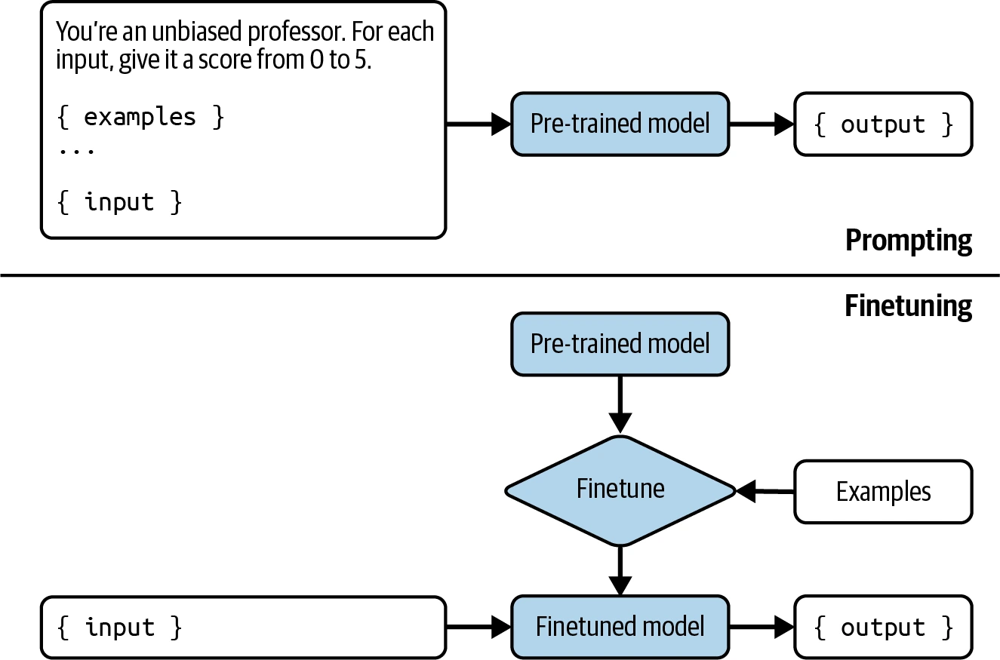
微调与 RAG PDF 611–617
Finetuning and RAG
用提示最大化性能收益后，你可能会问下一步应做 RAG 还是微调。答案取决于模型失败是信息问题还是行为问题。
如果模型因为缺少信息而失败，为它提供相关信息源访问权的 RAG 系统可以提供帮助。信息型失败发生在输出事实错误或已经过时时，常见场景有：
- 模型没有信息。公开模型不太可能拥有你或组织的私有信息。没有信息时，模型要么明确告诉你，要么编造答案。
- 模型信息过时。如果你问“Taylor Swift 发布了多少张录音室专辑？”，正确答案是 11，模型却回答 10，可能是因为知识截止日期早于最新专辑发布。
Ovadia 等（2024）的论文“Fine-Tuning or Retrieval?”表明，对当前事件问答等需要最新信息的任务，RAG 胜过微调模型。不仅如此，如表 7-2 所示，基础模型加 RAG 还胜过微调模型加 RAG。这个发现说明，微调虽然能提高特定任务表现，却也可能让其他方面退化。
| 模型 | 基础模型 | 基础模型＋RAG | FT-reg | FT-p |
|---|---|---|---|---|
| Mistral-7B | 0.481 | 0.875 | 0.504 | 0.588 |
| Llama 2-7B | 0.353 | 0.585 | 0.219 | 0.392 |
| Orca 2-7B | 0.456 | 0.876 | 0.511 | 0.566 |
表 7-2 在当前事件问答任务上，RAG 胜过微调；表中还包含作者使用的不同微调方法。PDF 第 613 页。
另一方面，如果模型有行为问题，微调可能有帮助。一种行为问题是输出事实正确，却与任务无关。例如，你让模型生成交给工程团队的软件项目技术规格，结果虽然准确，却缺少团队需要的细节。使用定义良好的技术规格微调，可以让输出更相关。
另一种问题是模型无法遵循预期输出格式。例如，你要求写 HTML 代码，生成代码却无法编译，原因可能是模型训练时接触 HTML 不够。微调时让模型接触更多 HTML 代码，可以纠正这一点。
语义解析是一类成败高度依赖模型按预期格式生成输出的任务，因此常常需要微调。第 2、6 章简要讨论过语义解析；它指把自然语言转换为 JSON 等结构化格式。强大的开箱即用模型通常擅长 JSON、YAML、正则表达式等常见且不太复杂的语法，却可能不擅长互联网上示例很少的语法，例如小众工具的领域专属语言或复杂语法。
简而言之：微调负责形式，RAG 负责事实。RAG 为模型提供外部知识，构造更准确、更有信息量的回答，并能缓解幻觉。微调帮助模型理解和遵循语法与风格。5使用足够的高质量数据时，微调有可能减少幻觉；数据质量差时，也可能让幻觉恶化。
如果模型同时有信息问题和行为问题，先做 RAG。RAG 通常更容易，因为不用整理训练数据，也不用托管微调模型。开始做 RAG 时，先用 BM25 等简单的词项检索方案，不要直接跳到需要向量数据库的方案。
RAG 带来的性能提升也可能显著大于微调。Ovadia 等（2024）表明，对 MMLU 几乎所有问题类别，RAG 在 Mistral 7B、Llama 2-7B、Orca 2-7B 三个模型上都胜过微调。
但 RAG 与微调并不互斥，有时可以组合使用来最大化性能。同一实验表明，在微调模型上加入 RAG，有 43% 的时候会提高 MMLU 表现。也要注意，相比只用 RAG，该组合有 57% 的时候并没有改善表现。
不存在适用于所有应用的通用工作流。图 7-3 展示应用开发过程随时间推进可能采用的若干路径，箭头表示可以尝试的下一步。图片受到 OpenAI（2023）示例工作流启发。
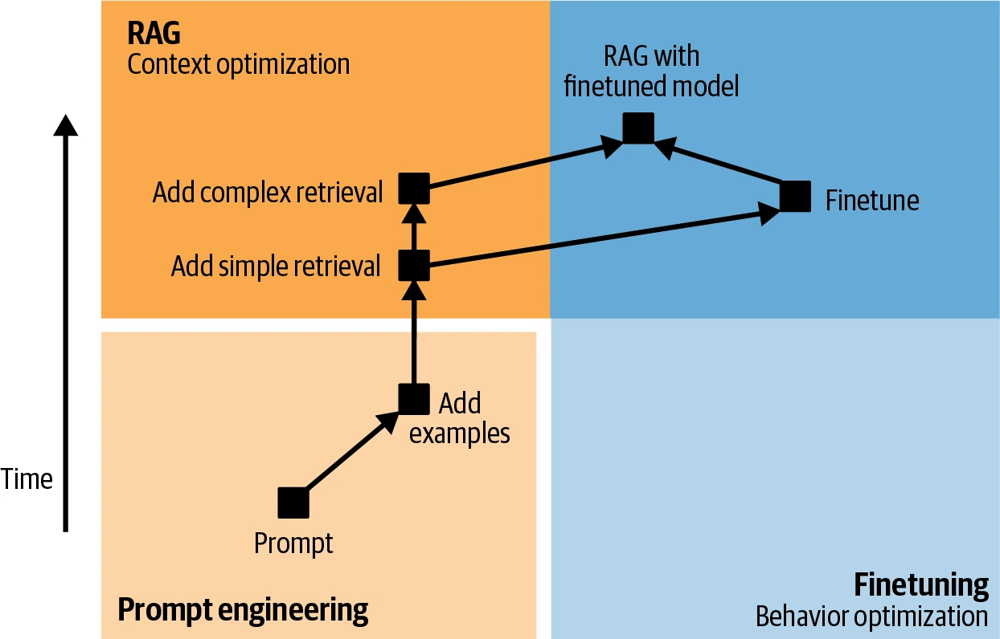
因此，把模型适配到任务的工作流可以如下进行。任何适配步骤之前，都应像第 4 章讨论的那样定义评估标准、设计评估流水线，并在整个开发过程中用它衡量进展。评估不仅发生在开头，而应存在于每一步：
- 先尝试只用提示让模型完成任务。使用第 5 章的提示工程最佳实践，包括系统地为提示做版本管理。
- 向提示添加更多示例。根据用例不同，所需示例可能在 1 到 50 个之间。
- 如果模型经常因信息缺失失败，把它连接到能提供相关信息的数据源。RAG 起步时使用词项搜索等基础检索。即使检索很简单，添加相关且准确的知识也应改善模型表现。
-
根据模型失败模式选择下一步：
- 如果仍有信息型失败，尝试更高级的 RAG，例如基于嵌入的检索。
- 如果仍有行为问题——持续生成不相关、格式错误或不安全的回答——可以选择微调。基于嵌入的检索通过在流水线中增加组件，提高推理复杂度；微调则增加模型开发复杂度，但不改变推理流程。
- 结合 RAG 与微调，争取进一步提升性能。
如果权衡微调和替代技术的全部利弊后仍决定微调，后续内容就是为你准备的。先来看微调的头号挑战：显存瓶颈。
显存瓶颈 PDF 617–639
Memory Bottlenecks
微调对显存要求很高，因此许多微调技术都致力于最小化显存占用。要理解这些技术为什么有效、怎样工作，必须先理解显存瓶颈从何而来；反过来，这也能帮助你选择最适合自己的微调方法。
除了解释微调的显存瓶颈，本节还给出几条“餐巾纸背面”式公式，用来估算模型显存占用。这些计算有助于估计服务或微调模型需要什么硬件。
显存计算需要拆解底层 ML 和计算概念，因此本节技术密度很高。如果已经熟悉，可以跳过。
理解显存瓶颈的关键结论
如果决定跳过本节，请至少记住以下结论；若其中任何一点陌生，本节概念会提供解释：
- 由于基础模型规模巨大，无论推理还是微调，显存都是瓶颈。神经网络的训练方式决定了微调所需显存通常远高于推理。
- 微调时，模型显存占用的主要决定因素是参数总数、可训练参数数量和数值表示格式。
- 可训练参数越多，显存占用越高。减少可训练参数可以降低微调显存要求，这正是 PEFT 的动机。
- 量化指把模型从位数较多的格式转换为位数较少的格式，是降低显存占用直接而高效的方法。对 130 亿参数模型，FP32 每个权重 4 字节，全部权重需要 52 GB；若每个值降到 2 字节，权重显存降到 26 GB。
- 推理通常尽可能使用较少位数，例如 16 位、8 位，甚至 4 位。
- 训练对数值精度更敏感，更难使用低精度。通常采用混合精度训练：一部分操作用较高精度（如 32 位），另一部分用较低精度（如 16 位或 8 位）。
反向传播与可训练参数 PDF 620–623
Backpropagation and Trainable Parameters
决定微调显存占用的关键因素之一，是可训练参数数量。可训练参数指微调期间能够更新的参数。预训练会更新全部模型参数；推理不更新任何参数；微调则可能更新一部分或全部参数。保持不变的参数称为冻结参数。
每个可训练参数需要额外显存，根源在模型的训练方式。写作本书时，神经网络通常通过反向传播（backpropagation）训练。6采用反向传播时，每个训练步骤分两个阶段：
- 前向传播：从输入计算输出。
- 反向传播：使用前向传播聚合的信号更新模型权重。
推理只执行前向传播；训练同时执行前向与反向传播。从高层看，反向传播如下工作：
- 比较前向传播算出的输出与预期输出（标准答案）。二者不同时，模型犯了错，需要调整参数。计算输出与预期输出之差称为损失（loss）。
- 计算每个可训练参数对错误贡献了多少，这个值叫梯度（gradient）。数学上，梯度是损失相对于各可训练参数的导数。7每个可训练参数都有一个梯度值；梯度越高，参数对损失贡献越大，应调整得越多。
- 根据对应梯度调整可训练参数。给定梯度后，参数应调整多少由优化器决定。常见优化器包括 SGD（随机梯度下降）和 Adam；对基于 Transformer 的模型，Adam 是目前最常用的优化器。
图 7-4 展示一个拥有三个参数和一个非线性激活函数的假想神经网络怎样做前向与反向传播。这里用简化网络是为了让图更容易理解。
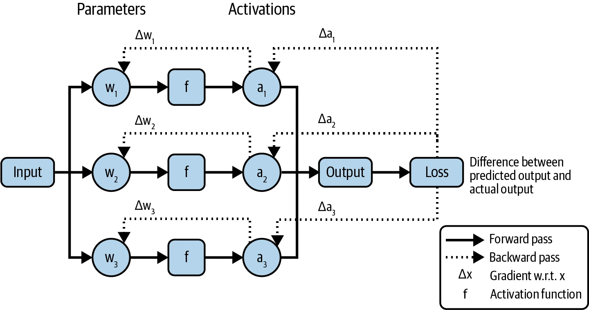
反向传播期间，每个可训练参数还伴随额外的值：梯度和优化器状态。因此，可训练参数越多，存储这些附加值所需的显存就越多。
显存估算 PDF 623–628
Memory Math
知道模型需要多少显存很有用，这样才能选择正确硬件。很多时候，你已经有硬件，需要计算它是否跑得动某个模型。如果模型推理需要 30 GB 显存，只有 24 GB 显存的芯片就不够。
模型显存占用既取决于模型，也取决于工作负载和各种显存优化技术。无法覆盖全部优化方法和负载，因此这里只给近似公式，让你大致了解推理和训练模型分别需要多少显存。
说明
推理与训练具有不同显存曲线，这也是训练芯片与推理芯片逐渐分化的原因之一；第 9 章会继续讨论。
推理所需显存（Memory needed for inference）
推理只执行前向传播。前向传播需要显存存储模型权重。设模型参数量为 N，每个参数所需内存为 M，加载模型参数所需显存为：
N × M
前向传播还需要存储激活值。Transformer 模型的注意力机制需要键值向量；激活值和键值向量的显存都随序列长度和批大小线性增长。
对许多应用，可以假设激活值与键值向量需要的显存相当于模型权重的 20%。若使用更长上下文或更大批次，实际需求会更高。在这个假设下，模型总显存占用为：
N × M × 1.2
以 130 亿参数模型为例，每个参数占 2 字节，权重需要 13B × 2 字节 = 26 GB；推理总显存约为 26 GB × 1.2 = 31.2 GB。
显存占用随模型规模快速增长，模型越大，显存越成为运行瓶颈。一个 700 亿参数、每参数 2 字节的模型，仅权重就需要惊人的 140 GB 显存。89
训练所需显存（Memory needed for training）
训练需要前述模型权重和激活值显存，此外还需要梯度和优化器状态显存，后两者随可训练参数数量增长。整体公式为：
训练显存 = 模型权重 + 激活值 + 梯度 + 优化器状态
提示
反向传播期间，每个可训练参数需要一个梯度值，并根据优化器不同，需要零到两个优化器状态值：
- 普通 SGD 优化器没有状态。
- 动量优化器为每个可训练参数保存一个值。
- Adam 优化器为每个可训练参数保存两个值。
假设使用 Adam 更新 130 亿参数模型的全部参数。每个可训练参数需要梯度和两个优化器状态，共三个值。若每个值 2 字节，梯度与优化器状态需要：
130 亿 × 3 × 2 字节 = 78 GB
如果只有 10 亿个可训练参数，则梯度与优化器状态只需要：
10 亿 × 3 × 2 字节 = 6 GB
还要注意：此前公式假设激活值显存小于模型权重显存，现实中激活值可能大得多。如果为计算梯度而保存激活值，它所需显存甚至会远超模型权重。Korthikanti 等（2022）的论文“Reducing Activation Recomputation in Large Transformer Models”比较了不同规模 Megatron 模型的激活显存与权重显存，如图 7-5 所示。
减少激活显存的一种方式是不存储激活值，而在需要时重新计算。这叫梯度检查点（gradient checkpointing）或激活重计算（activation recomputation）。它降低显存需求，却因重复计算而增加训练时间。10
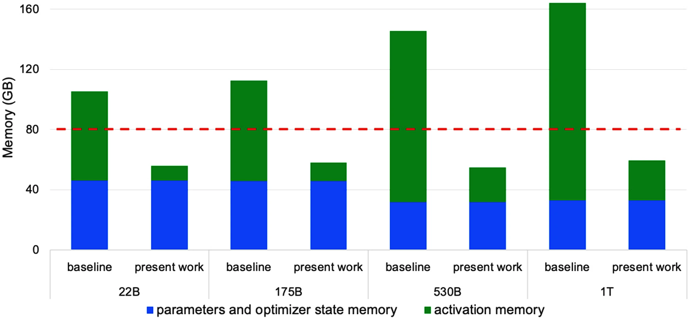
数值表示 PDF 628–632
Numerical Representations
到目前为止的显存计算，都假设每个值占 2 字节。模型中每个值的表示内存会直接计入总显存；若把每个值所需内存减半，模型权重显存也随之减半。
在讨论怎样减少每个值的内存之前，先理解数值表示。神经网络传统上用浮点数表示数值。最常见的是遵循 IEEE 754 浮点算术标准的 FP 系列：
- FP32 用 32 位（4 字节）表示浮点数，称为单精度。
- FP64 用 64 位（8 字节），称为双精度。
- FP16 用 16 位（2 字节），称为半精度。
FP64 仍用于许多计算——写作本书时，它是 NumPy 与 pandas 的默认格式——但因内存占用很少用于神经网络。FP32 和 FP16 更常见。AI 工作负载中的其他流行浮点格式包括 BF16（BFloat16）和 TF32（TensorFloat-32）：BF16 由 Google 设计，用于优化 TPU 上的 AI 性能；TF32 由 NVIDIA 为 GPU 设计。11
数字也可以表示为整数。整数格式尚不如浮点格式普遍，却越来越流行，常见格式包括 INT8（8 位整数）和 INT4（4 位整数）。12
每种浮点格式通常用 1 位表示正负号，其余位分给范围和精度：13
- 范围：范围位数量决定格式能表示的数值区间。位越多，范围越广，就像十进制位数越多，能表示的数量级越广。
- 精度：精度位数量决定数字能表示得多精确。减少精度位会降低精确度。例如把 10.1234 转成只支持两位小数的格式，会得到 10.12。
图 7-6 展示不同浮点格式及其范围位与精度位。14
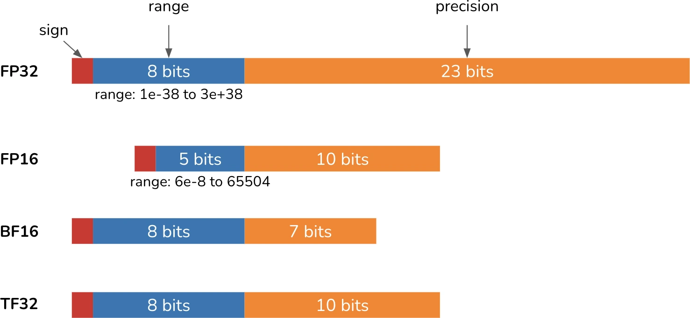
位数更多的格式被视为精度更高。把高精度数转为低精度格式——例如 FP32 转 FP16——意味着降低精度，可能改变数值或造成错误。表 7-3 展示 FP32 值转换为 FP16、BF16 和 TF32 的结果。
| FP32 | FP16 | BF16 | TF32 |
|---|---|---|---|
| 0.0123456789 | 0.0123443603515625 | 0.0123291 | 0.01234436035 |
| 0.123456789 | 0.12347412109375 | 0.123535 | 0.12341308593 |
| 1.23456789 | 1.234375 | 1.23438 | 1.234375 |
| 12.3456789 | 12.34375 | 12.375 | 12.34375 |
| 123.456789 | 123.4375 | 123.5 | 123.4375 |
| 1234.56789 | 1235.0 | 1232.0 | 1234.0 |
| 12345.6789 | 12344.0 | 12352.0 | 12344.0 |
| 123456.789 | INF | 123392.0 | 123456.0 |
| 1234567.89 | INF | 1236990.0 | 1233920.0 |
表 7-3 把 FP32 值转换为更低精度格式；转换造成的不准确值以斜体显示。超出 FP16 范围的值被舍入为无穷大。PDF 第 630 页。
注意，BF16 和 FP16 位数相同，但 BF16 给范围分配更多位、给精度分配更少位。因此 BF16 能表示超出 FP16 范围的大数，却不如 FP16 精确。例如，1234.56789 在 FP16 中是 1235.0（变化 0.035%），在 BF16 中是 1232.0（变化 0.208%）。
警告
使用模型时，务必按它预期的格式加载。加载到错误数值格式会显著改变模型。例如 Llama 2 发布时权重设为 BF16，但许多团队用 FP16 加载，随后发现模型质量远低于宣传。15这场误解浪费了很多人的时间，好处是迫使许多人学习数值表示。
适合你的格式取决于工作负载数值的分布——例如需要的取值范围、工作负载对微小数值变化的敏感程度，以及底层硬件。16
量化 PDF 632–639
Quantization
表示模型数值所需的位越少，显存占用越低。100 亿参数模型采用 32 位格式时，权重需要 40 GB；相同模型使用 16 位只需 20 GB。降低精度也称量化（quantization），是降低模型显存占用既便宜又极其有效的方法。它容易实施，且能跨任务与架构泛化。在 ML 语境中，“低精度”通常指位数少于标准 FP32 的任何格式。
量化与降低精度
严格来说，只有目标格式是整数时才叫量化；实践中，“量化”通常泛指把数值转换成更低精度格式的所有技术。为与文献一致，本书也用量化指精度降低。
进行量化时，需要决定量化什么，以及何时量化：
- 量化什么：理想情况下，应量化最占显存的部分，但也取决于哪些部分可以量化而不会严重损害性能。“显存估算”一节指出，推理显存主要来自模型权重和激活值。17权重量化比激活量化更常见，因为前者对性能影响通常更稳定、准确率损失更小。
- 何时量化：量化可以在训练期间或训练后进行。训练后量化（PTQ）指模型训练完成后再量化，是目前最常见的形式，也更贴近通常不训练模型的 AI 应用开发者。
推理量化（Inference quantization）
深度学习早期，使用 FP32 训练和服务模型是标准做法。自 2010 年代后期起，16 位乃至更低精度的服务越来越常见。例如 Dettmers 等（2022）分别通过 LLM.int8() 与 QLoRA（Dettmers 等，2023），出色地把 LLM 量化到 8 位和 4 位。
模型也可以用混合精度服务：能降精度的值降低精度，必须保持精度的值则保留高精度。Apple（2024）为了在设备上服务模型，使用混合 2 位与 4 位格式、平均每权重 3.5 位的量化方案。NVIDIA 也在 2024 年为即将到来的 4 位神经网络发布 Blackwell GPU 架构，支持 4 位浮点模型推理。
达到 8 位及以下以后，数值表示会更棘手。可以使用 FP8（8 位）、FP4（4 位）等 minifloat 格式，让参数保持浮点数；18但更常见的是转成 INT8、INT4 等整数格式。
量化有效，但有极限。每个值不能少于 1 位，已经有人尝试 1 位表示，例如 BinaryConnect（Courbariaux 等，2015）、Xnor-Net（Rastegari 等，2016）和 BitNet（Wang 等，2023）。19
2024 年，Microsoft 研究人员 Ma 等推出 BitNet b1.58，宣称 1 位 LLM 时代正在到来。它是基于 Transformer、每参数只需 1.58 位的语言模型；在不超过 39 亿参数的规模上，其性能可与 16 位 Llama 2（Touvron 等，2023）相比，如表 7-4。
| 模型 | 规模 | ARCe | ARCc | HS |
|---|---|---|---|---|
| Llama LLM | 700M | 54.7 | 23.0 | 37.0 |
| BitNet b1.58 | 700M | 51.8 | 21.4 | 35.1 |
| Llama LLM | 1.3B | 56.9 | 23.5 | 38.5 |
| BitNet b1.58 | 1.3B | 54.9 | 24.2 | 37.7 |
| Llama LLM | 3B | 62.1 | 25.6 | 43.3 |
| BitNet b1.58 | 3B | 61.4 | 28.3 | 42.9 |
| BitNet b1.58 | 3.9B | 64.2 | 28.7 | 44.2 |
表 7-4 BitNet b1.58 与 16 位 Llama 2 在不同模型规模和基准上的表现比较。PDF 第 635 页。
降低精度不仅减少显存，通常还能提高计算速度。第一，它允许更大批次，让模型并行处理更多输入；第二，低精度计算本身更快，进一步降低推理延迟和训练时间。以两个数相加为例，如果逐位计算、每位耗时 t 纳秒，32 位需要 32t，16 位只需 16t。但格式转换本身也需要计算，因此降低精度不一定总能降低延迟。
降低精度也有缺点。每次转换通常会造成微小数值变化，许多小变化可能累积成显著性能变化。如果数值超出低精度格式可表示的范围，可能被转换成无穷大或任意值，进一步降低模型质量。怎样尽量不影响性能地降低精度，是模型开发者、硬件厂商与应用开发者都在积极研究的领域。
低精度推理已经成为标准：先用较高精度训练模型以最大化性能，再降低精度用于推理。PyTorch、TensorFlow、Hugging Face transformers 等主要 ML 框架都能用几行代码免费完成 PTQ。某些边缘设备只支持量化推理，因此 TensorFlow Lite、PyTorch Mobile 等端侧推理框架也提供 PTQ。
训练量化（Training quantization）
训练期间量化还不如 PTQ 普遍，却正在受到关注。它有两个不同目标：
- 产出能在推理时以低精度保持良好表现的模型，解决训练后量化可能降低模型质量的问题。
- 减少训练时间和成本。量化降低显存，让模型能在更便宜的硬件上训练，或在相同硬件上训练更大模型；它也加速计算，进一步降低成本。
一种量化技术可能实现其中一个或两个目标。
量化感知训练（QAT）旨在创建能以低精度高质量推理的模型。QAT 在训练期间模拟低精度——例如 8 位——行为，让模型学会在低精度下生成高质量输出。不过，计算仍以高精度执行，因此 QAT 不会缩短训练时间；模拟低精度行为的额外工作甚至可能延长训练。
直接用低精度训练则能同时帮助两个目标。人们早在 2016 年就尝试低精度训练，参见 Hubara 等（2016）和 Jacob 等（2017）。Character.AI（2024）分享说，他们成功完全使用 INT8 训练模型，既消除了训练与服务精度不匹配，也显著提高训练效率。不过，低精度训练更难，因为反向传播对低精度更敏感。20
低精度训练常使用混合精度：保留一份高精度权重副本，而梯度、激活等其他值以低精度保存。21也可以让不敏感的权重值用低精度计算、敏感值用高精度。例如 LLM-QAT（Liu 等，2023）把权重与激活量化为 4 位，但嵌入保持 16 位。
模型哪些部分采用低精度，可以通过许多 ML 框架的自动混合精度（AMP）功能自动决定。
不同训练阶段也可以采用不同精度。例如先用高精度训练，再用低精度微调。对基础模型，这尤其常见：从零训练模型的组织可能有足够算力做高精度训练；模型发布后，算力较少的开发者再以低精度微调。
微调技术 PDF 639–680
Finetuning Techniques
前一节应该已经说明，大规模模型微调为何如此占显存。微调所需显存越多，负担得起的人就越少。降低模型显存占用的技术让微调更易获得，让更多人能把模型适配到自己的应用。本节聚焦以参数高效微调为核心的显存高效微调技术。
本节也会讨论模型合并，这是一种令人兴奋、但更具实验性的自定义模型方法。模型合并通常不被视为微调，但它与微调互补，所以放在这里。微调根据特定需求定制一个模型；模型合并则组合多个模型——往往是微调后的模型——来实现同一目的。
组合多个模型并非新概念，但新模型类型与微调技术催生了许多富有创意的合并方法，也让这部分特别有趣。
参数高效微调 PDF 639–644
Parameter-Efficient Finetuning
微调早期，模型足够小，人们能微调整个模型。这种方法叫全量微调（full finetuning），可训练参数数恰好等于模型总参数数。
全量微调看起来与训练相似，主要差别是：训练从随机模型权重开始，微调从此前已经训练的权重开始。
“显存估算”已经说明，可训练参数越多，显存需求越高。考虑一个 70 亿参数模型：
- 若使用 FP16 等 16 位格式，仅加载模型权重就需要 14 GB 显存。
- 同样用 16 位格式和 Adam 全量微调，还需要 7B × 3 × 2 字节 = 42 GB。
- 权重、梯度、优化器状态合计需要 14 GB + 42 GB = 56 GB。
56 GB 超过大多数消费级 GPU 的容量——它们通常有 12–24 GB 显存，高端型号最多约 48 GB；而且这个估算还没包含激活值。
说明
要让模型装进现有硬件，可以减少模型显存占用，也可以提高硬件显存利用效率。量化和 PEFT 用于最小化总占用；CPU 卸载等技术则让硬件显存用得更好。与其把整个模型塞进 GPU，不如像 DeepSpeed（Rasley 等，2020）展示的那样，把超出的部分卸载到 CPU。
还没考虑的一点是，全量微调——尤其监督微调和偏好微调——通常需要大量多数人负担不起的高质量标注数据。由于全量微调对显存和数据要求很高，人们开始采用部分微调（partial finetuning）：只更新模型的一部分参数。
例如，一个十层模型可以冻结前九层，只微调最后一层，把可训练参数减少到全量微调的 10%。22
部分微调虽然降低显存，却不够参数高效：要接近全量微调表现，仍需很多可训练参数。Houlsby 等（2019）对 BERT large（Devlin 等，2018）的研究表明，要在 GLUE 基准（Wang 等，2018）上达到可比全量微调的表现，大约要更新 25% 的参数。图 7-7 展示部分微调在不同可训练参数数目下的性能曲线。
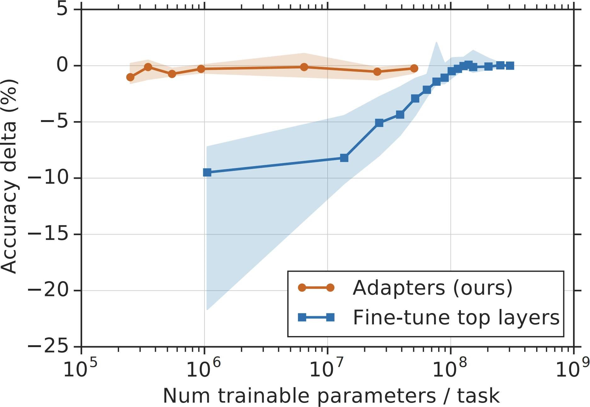
由此产生一个问题：怎样用少得多的可训练参数，实现接近全量微调的表现？为回答这个问题产生的微调技术就是参数高效方法。并没有一条明确门槛规定方法必须达到什么程度才算参数高效；一般而言，若一种技术能用少几个数量级的可训练参数达到接近全量微调的表现，就可以称为参数高效。
PEFT 的思想由 Houlsby 等（2019）提出。他们表明，只要在模型正确位置插入额外参数，就能用很少可训练参数取得很强的微调表现。他们在 BERT 每个 Transformer 块中插入两个适配器模块，如图 7-8 所示。
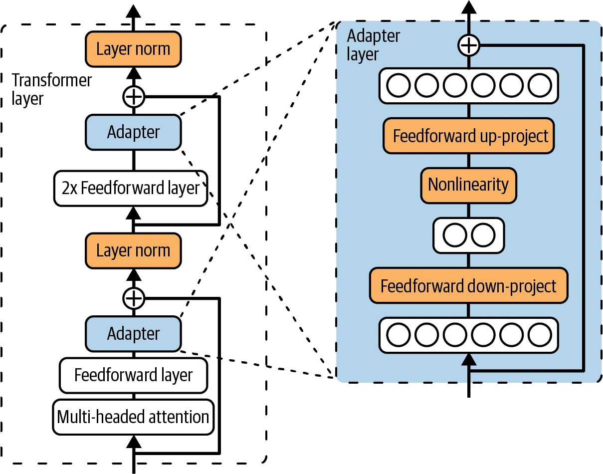
微调时，他们保持模型原参数不变，只更新适配器，因此可训练参数数就是适配器参数数。在 GLUE 基准上，他们仅使用相当于全量微调 3% 的可训练参数，就把性能差距控制在 0.4% 以内。图 7-7 的橙线展示不同适配器尺寸下，相对于全量微调的性能差。
这种方法的缺点是增加微调模型的推理延迟。适配器引入额外层，给前向传播增加计算步骤，使推理变慢。
PEFT 让人们能在更便宜的硬件上微调，从而让更多开发者参与。PEFT 方法通常不仅参数高效，也样本高效。全量微调可能需要几万到几百万个示例才能明显改善质量，一些 PEFT 方法只用几千个就能表现很好。
PEFT 优势明显，相关技术发展很快。下一小节先概览这些技术，再深入最常见的 PEFT 技术 LoRA。
PEFT 技术 PDF 644–649
PEFT Techniques
当前繁多的 PEFT 方法大体分两类：基于适配器的方法和基于软提示的方法；未来很可能还会出现新类别。
基于适配器的方法指所有向模型权重添加模块的方法，包括 Houlsby 等（2019）的方法。因为会添加参数，它们也叫加法方法。
写作本书时，LoRA（Hu 等，2021）是最流行的适配器方法，下一节会专门讨论。其他方法包括与 LoRA 同期出现的 BitFit（Zaken 等，2021）；较新的方法包括 IA3（Liu 等，2022），它的高效混合任务批处理策略特别适合多任务微调，在某些情况下被证明胜过 LoRA 甚至全量微调。LongLoRA（Chen 等，2023）则是结合注意力修改技术来扩展上下文长度的 LoRA 变体。
如果说适配器方法向模型架构增加可训练参数，软提示方法则通过引入特殊的可训练词元，改变模型处理输入的方式。这些额外词元与输入词元一起送入模型。它们被称为软提示，是因为和输入中的硬提示一样，也会引导模型行为；但二者有两个区别：
- 硬提示可供人阅读，通常由“I”“write”“a”“lot”等离散词元构成；软提示是类似嵌入的连续向量，人无法阅读。
- 硬提示静态、不可训练；软提示可以在调优过程中通过反向传播优化，从而适应特定任务。
有些人把软提示描述成提示工程与微调的交叉。图 7-9 展示怎样把软提示与硬提示结合，指导模型行为。
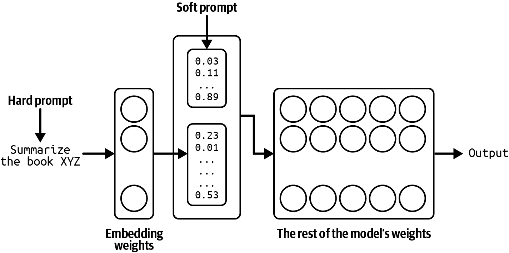
软提示调优领域有一系列名称相似、容易混淆的技术，例如 prefix-tuning（Li 与 Liang，2021）、P-Tuning（Liu 等，2021）和 prompt tuning（Lester 等，2021）。23它们主要区别在于插入软提示的位置。
例如，prefix tuning 会在每个 Transformer 层的输入前添加软提示词元，而 prompt tuning 只在嵌入后的输入前添加。如果想使用其中任何一种，许多 PEFT 框架都能开箱即用地实现。
为了解实际使用哪些 PEFT 方法，作者在 2024 年 10 月分析了 GitHub 仓库 huggingface/peft 的 1,000 多个开放 issue。假设是：使用某种技术的人更可能报告问题或提问。结果见图 7-10。对“P-Tuning”，作者同时搜索 p_tuning 和 p tuning，以涵盖不同拼写。
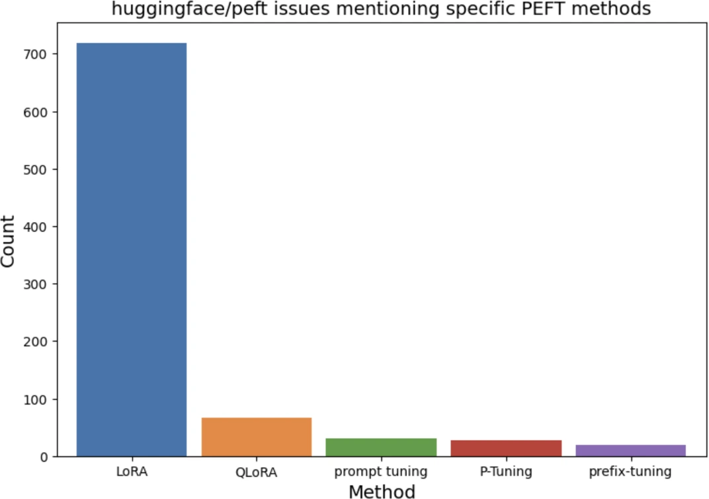
分析清楚表明 LoRA 占主导地位。软提示不那么常见，但希望得到比提示工程更多定制能力、又不想投入传统微调的人，对它的兴趣似乎正在增长。
由于 LoRA 很流行，下一节聚焦它的工作原理，以及它怎样解决早期适配器方法带来的问题。即使不使用 LoRA，这次深入讨论也应提供一个探索其他微调方法的框架。
LoRA PDF 649–664
LoRA
与 Houlsby 等（2019）的原始适配器方法不同，LoRA（Low-Rank Adaptation，低秩适配；Hu 等，2021）以不会增加推理延迟的方式加入额外参数。它不向基础模型添加额外层，而是使用可以合并回原始层的模块。
LoRA 可以应用于单个权重矩阵。给定一个权重矩阵，它把矩阵分解为两个更小矩阵的乘积，只更新这两个小矩阵，最后再把它们合并回原矩阵。
考虑维度为 n × m 的权重矩阵 W。LoRA 如下工作：
- 先选择小矩阵维度。设选择值为 r，构造矩阵 A（n × r）与 B（r × m）。乘积 WAB = AB 与 W 维度相同；r 称为 LoRA 秩。
- 把 WAB 加到原权重矩阵 W，得到新矩阵 W′，并在模型中用 W′ 代替 W。超参数 α 控制 WAB 的贡献： W′ = W + (α/r)WAB。
- 微调期间只更新 A 和 B 中的参数，保持 W 不变。
图 7-11 展示这个过程。
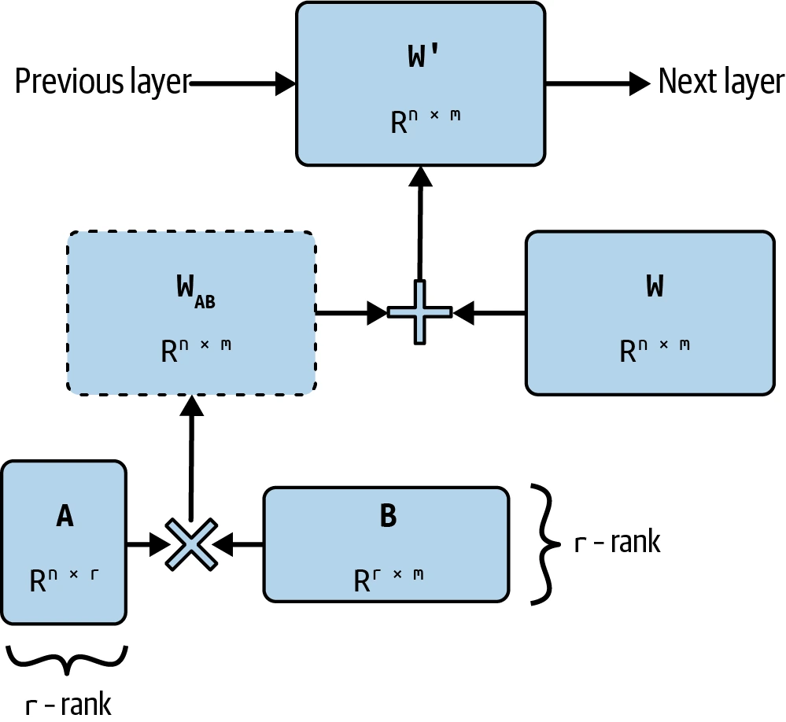
说明：低秩分解
LoRA 建立在低秩分解这一历史悠久的降维技术之上。核心思想是把大矩阵分解成两个小矩阵的乘积，从而减少参数数、计算量和显存。例如，9 × 9 矩阵可分解为 9 × 1 与 1 × 9 两个矩阵的乘积；原矩阵有 81 个参数，两个小矩阵合计只有 18 个。
第一个分解矩阵的列数、以及第二个分解矩阵的行数，对应分解的秩。原矩阵是满秩矩阵，两个小矩阵则表示其低秩近似。
分解能显著减少参数，但它有损，因为只是近似原矩阵。秩越高，分解能保留的原矩阵信息越多。
和原始适配器方法一样，LoRA 参数高效、样本高效；矩阵分解还让它使用更少可训练参数。LoRA 论文表明，对 GPT-3，LoRA 在多个任务上能达到可比或优于全量微调的表现，而只使用约 470 万个可训练参数，即全量微调的 0.0027%。
LoRA 为什么有效？ PDF 652–655
Why Does LoRA Work?
LoRA 等参数高效方法太流行，以至于许多人把它们视为理所当然。但参数高效为什么可能？如果模型预训练时需要大量参数才能学会行为，微调改变行为时难道不也需要大量参数吗？
数据也有同样问题：如果模型需要大量数据才能学会行为，为什么预训练需要数百万、数十亿个样本，微调却只需几百或几千个就能显著改变行为？
多篇论文认为，LLM 虽有大量参数，却具有很低的内在维度（intrinsic dimension）；参见 Li 等（2018）、Aghajanyan 等（2020）与 Hu 等（2021）。它们表明，预训练会隐式地最小化模型内在维度。令人惊讶的是，越大的模型预训练后往往内在维度越低。
这意味着预训练像面向下游任务的压缩框架。换句话说，LLM 训练得越好，就越容易用少量可训练参数和少量数据微调。
你可能会问：低秩分解如此有效，为什么不也用于预训练？与其先预训练大模型、只在微调时低秩分解，能否从一开始就分解模型再预训练？低秩预训练可显著减少参数，从而显著降低预训练时间和成本。
整个 2010 年代，许多人尝试训练低秩神经网络，例如 Sainath 等（2013）的“Low-Rank Matrix Factorization for Deep Neural Network Training with High-Dimensional Output Targets”、Povey 等（2018）的“Semi-Orthogonal Low-Rank Matrix Factorization for Deep Neural Networks”，以及 Jaderberg 等（2014）的“Speeding up Convolutional Neural Networks with Low Rank Expansions”。
低秩分解在小规模上已经证明有效。例如 SqueezeNet（Iandola 等，2016）应用多种分解策略——包括用 1 × 1 卷积替换 3 × 3 卷积——只用少 50 倍的参数就在 ImageNet 上达到 AlexNet 水平的准确率。
更近的低秩 LLM 预训练尝试包括 ReLoRA（Lialin 等，2023）和 GaLore（Zhao 等，2024）。ReLoRA 可用于不超过 13 亿参数的 Transformer；GaLore 在 10 亿参数规模达到可比满秩模型的表现，在 70 亿参数规模也展现潜力。
也许不久的将来，研究人员就能把低秩预训练扩展到数千亿参数。但如果 Aghajanyan 等的论点正确——预训练会隐式压缩模型内在维度——仍可能必须先做满秩预训练，把内在维度充分降低到低秩分解可以工作的程度。究竟要做多少满秩训练才能切换到低秩训练，是一个值得研究的问题。
LoRA 配置 PDF 655–657
LoRA Configurations
使用 LoRA 时，需要决定把它应用到哪些权重矩阵，以及每个分解采用什么秩。LoRA 可以应用到单个权重矩阵，所以效率既取决于目标矩阵，也取决于模型架构——不同架构拥有不同权重矩阵。
尽管 LoRA 也有用于卷积神经网络等其他架构的例子（Dutt 等，2023；Zhong 等，2024；Aleem 等，2024），它主要还是用于 Transformer。24
LoRA 最常用于注意力模块的四个权重矩阵：查询 Wq、键 Wk、值 Wv 和输出投影 Wo。通常会统一应用到模型内同一类型的全部矩阵；例如“应用到查询矩阵”就是应用到模型所有查询矩阵。
朴素做法是应用到全部注意力矩阵，但硬件显存常常只容纳固定数量的可训练参数。给定预算，应把 LoRA 应用到哪些矩阵才能最大化性能？
微调 GPT-3 175B 时，Hu 等（2021）把可训练参数预算定为 1,800 万，即模型总参数的 0.01%。这个预算可以支持：
- 一个矩阵，秩 8；
- 两个矩阵，秩 4；
- 全部四个矩阵，秩 2。
说明
GPT-3 175B 有 96 个 Transformer 层，模型维度 12,288。把秩为 2 的 LoRA 应用于全部四个矩阵，每层可训练参数为 (12,288 × 2 × 2) × 4 = 196,608，整个模型为 18,874,368。
他们发现，在 WikiSQL（Zhong 等，2017）和 MultiNLI（Williams 等，2017）基准上，把秩 2 的 LoRA 应用到全部四个矩阵表现最好，结果见表 7-5。如果只能选两个注意力矩阵，作者建议通常选查询矩阵和值矩阵。
| 权重类型 | Wq | Wk | Wv | Wo | Wq,Wk | Wq,Wv | 全部四个 |
|---|---|---|---|---|---|---|---|
| 秩 r | 8 | 8 | 8 | 8 | 4 | 4 | 2 |
| WikiSQL（±0.5%） | 70.4 | 70.0 | 73.0 | 73.2 | 71.4 | 73.7 | 73.7 |
| MultiNLI（±0.1%） | 91.0 | 90.8 | 91.0 | 91.3 | 91.3 | 91.3 | 91.7 |
表 7-5 在 1,800 万可训练参数预算下的 LoRA 表现。结果来自 Hu 等的 LoRA 论文。PDF 第 656 页。
经验观察表明，把 LoRA 应用到更多权重矩阵——包括前馈矩阵——结果会更好。例如 Databricks 报告，最大的性能提升来自对全部前馈层应用 LoRA（Sooriyarachchi，2023）。Fomenko 等（2024）指出，前馈 LoRA 可以补充注意力 LoRA，不过在显存约束下，注意力 LoRA 通常更有效。
LoRA 的美妙之处在于，虽然表现取决于秩，但研究表明许多用例用 4 到 64 的小秩就够了。秩越小，LoRA 参数越少，显存占用也越低。
LoRA 作者意外地观察到，增大 r 不会提高微调性能。这与 Databricks 的报告一致：“把 r 增加到某个值之后，模型输出质量可能不再有可辨别的提升”（Sooriyarachchi，2023）。25有人认为秩过高甚至会因过拟合而有害；但某些场景仍可能需要高秩，Raschka（2023）在自己的任务上发现 r = 256 最好。
另一个可配置超参数是 α，它决定合并时 WAB 对 W′ = W + (α/r)WAB 的贡献。实践中，作者常见 α:r 比率在 1:8 到 8:1 之间，但最佳比率因任务而异。若 r 较小，可能希望 α 较大；若 r 较大，则可能希望 α 较小。必须通过实验确定最适合用例的 (r, α) 组合。
服务 LoRA 适配器 PDF 657–661
Serving LoRA Adapters
LoRA 不仅减少微调所需显存和数据，还凭借模块化简化多模型服务。LoRA 微调模型一般有两种服务方式：
- 服务前把 LoRA 权重 A、B 合并进原模型，得到新矩阵 W′。推理时没有额外计算，因此不增加延迟。
- 服务时保持 W、A、B 分离，在推理期间把 A、B 合并回 W，因此增加额外延迟。
如果只服务一个 LoRA 模型，第一种通常更好；对于共享同一基础模型的多个 LoRA 模型——即 multi-LoRA 服务——第二种通常更好。图 7-12 展示保持适配器分离时的 multi-LoRA 服务。
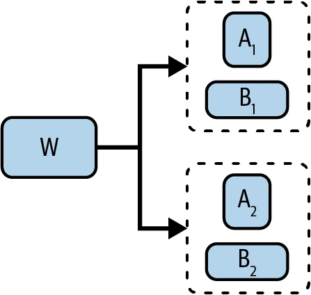
对 multi-LoRA 服务，第二种方式虽然增加延迟，却显著减少存储。假设为每个客户用 LoRA 微调一个模型；100 个客户就有 100 个共享同一基础模型的微调模型。第一种方式必须存储 100 个满秩 W′；第二种只需一个满秩 W 和 100 组小矩阵（A，B）。
具体地，原矩阵 W 维度为 4096 × 4096，共 1,680 万参数；LoRA 秩为 8 时，A、B 参数总数为 4096 × 8 × 2 = 65,536：
- 方式 1：100 个满秩 W′，共 16.8M × 100 = 1.68B 参数。
- 方式 2：一个满秩 W 加 100 组小矩阵，共 16.8M + 65,536 × 100 = 23.3M 参数。
第二种方式也能更快切换任务。当前用客户 X 的模型服务，切换到客户 Y 时不必加载 Y 的完整权重矩阵，只需加载 Y 的 LoRA 适配器，显著减少加载时间。A、B 分离虽然增加延迟，但有优化技术可将其降到最低；本书 GitHub 仓库提供了操作指南。
Multi-LoRA 服务也容易组合多个专用模型。与其用一个庞大模型处理多项任务，不如为每项任务配一个 LoRA 适配器。例如 Apple（2024）使用多个 LoRA 适配器，把同一个 30 亿参数基础模型适配到不同 iPhone 功能；他们还用量化进一步减少基础模型和适配器的显存，从而在设备上服务全部模型。
LoRA 适配器的模块化意味着它们可以分享和复用。像使用预训练模型一样，可以使用公开的微调 LoRA 适配器；在 Hugging Face 或 AdapterHub 等计划中就能找到。26
LoRA 听起来很好，代价是什么？主要缺点是表现通常不如全量微调，而且实施可能更难，因为要修改模型实现，需要理解架构和具备编码能力。但这通常只困扰冷门基础模型；Hugging Face PEFT、Axolotl、unsloth、LitGPT 等框架很可能已开箱支持热门模型的 LoRA。
量化 LoRA PDF 661–664
Quantized LoRA
LoRA 迅速流行，催生了大量变体。其中一些试图进一步减少可训练参数。但表 7-6 表明，与模型权重显存相比，LoRA 适配器本身极小；减少 LoRA 参数只能让总显存下降很小比例。
| 模型 | 模型权重显存（16 位） | LoRA 可训练参数（r=2，查询与键矩阵） | LoRA 适配器显存（16 位） |
|---|---|---|---|
| Llama 2（13B） | 26 GB | 3.28M | 6.55 MB |
| GPT-3（175B） | 350 GB | 18.87M | 37.7 MB |
表 7-6 LoRA 权重所需显存与模型权重所需显存的比较。PDF 第 661 页。
与其继续减少 LoRA 参数，不如在微调时量化模型权重、激活和／或梯度，更有效地降低显存。一个早期且有潜力的量化 LoRA 版本是 QLoRA（Dettmers 等，2023）。27原始 LoRA 在微调时用 16 位存储模型权重；QLoRA 以 4 位存储权重，但计算前向与反向传播时，把它们反量化回 BF16。
QLoRA 使用的 4 位格式是 NF4（NormalFloat-4），其依据是预训练权重通常服从中位数为零的正态分布。除 4 位量化外，QLoRA 还使用分页优化器，在 GPU 内存不足时——尤其序列很长时——自动在 CPU 与 GPU 之间转移数据。这些技术让 650 亿参数模型可以在一张 48 GB GPU 上微调。
作者用 4 位模式微调了 Llama 7B 到 65B 等多种模型，得到名为 Guanaco 的模型家族。它们在公开基准和比较评估上都有竞争力。表 7-7 展示 2023 年 5 月由 GPT-4 评判的 Guanaco、GPT-4 与 ChatGPT Elo 分数。Guanaco 65B 没有胜过 GPT-4，却经常比 ChatGPT 更受偏好。
| 模型 | 大小 | Elo |
|---|---|---|
| GPT-4 | — | 1348 ± 1 |
| Guanaco 65B | 41 GB | 1022 ± 1 |
| Guanaco 33B | 21 GB | 992 ± 1 |
| Vicuna 13B | 26 GB | 974 ± 1 |
| ChatGPT | — | 966 ± 1 |
| Guanaco 13B | 10 GB | 916 ± 1 |
| Bard | — | 902 ± 1 |
| Guanaco 7B | 6 GB | 879 ± 1 |
表 7-7 2023 年 5 月 Guanaco 与流行模型的 Elo 分数，使用 GPT-4 作为裁判；实验来自 QLoRA（Dettmers 等，2023）。PDF 第 663 页。
QLoRA 的主要限制是 NF4 量化很昂贵。它能降低显存，却可能因为额外的量化与反量化步骤而延长训练时间。
量化 LoRA 很有希望节省显存，因而是活跃研究领域。除 QLoRA 外，还有 QA-LoRA（Xu 等，2023）、ModuLoRA（Yin 等，2023）和 IR-QLoRA（Qin 等，2024）。
模型合并与多任务微调 PDF 664–680
Model Merging and Multi-Task Finetuning
如果微调通过改变单个模型创建自定义模型，模型合并则通过组合多个模型来创建自定义模型。模型合并比单独微调更灵活：可以拿两个现有模型合成一个新的、希望更有用的模型，也可以在合并前微调其中任意或全部模型。
合并后的模型不一定必须继续微调，但继续微调往往能改善表现。不继续微调时，模型合并不需要 GPU，因此对缺少大量算力的独立模型开发者特别有吸引力。
模型合并的目标，是创建一个比各组成模型分别使用更有价值的单一模型。附加价值可以来自性能提升。例如两个模型在同一任务上各有所长，就能合成一个比二者都强的模型。假设一个模型能回答前 60% 的问题，另一个能回答后 60%，合在一起或许能回答 80%。
附加价值也可以来自显存减少，继而降低成本。例如两个模型分别完成不同任务，可以合成一个参数更少、却能完成两项任务的模型。这对基于适配器的模型特别有吸引力：如果两个模型都在同一基础模型上微调，可以把两个适配器合成一个。
模型合并的一个重要用例是多任务微调。没有模型合并时，要为多项任务微调，一般采用下列方式之一：
- 同时微调：创建包含全部任务示例的数据集，在上面微调模型，让模型同时学习所有任务。但同时学习多种技能通常更难，因此需要更多数据和训练。
- 顺序微调：让模型依次分别学习每项任务：先训练任务 A，再训练任务 B，以此类推。假设是模型一次学习一项任务比较容易。不幸的是，神经网络容易发生灾难性遗忘（Kirkpatrick 等，2016）：学习新任务时忘记旧任务，导致早期任务性能大幅下降。
模型合并提供第三种多任务微调方式：分别、并行地为不同任务微调，完成后再合并模型。分别微调让模型更好地学习每项任务；没有顺序学习，灾难性遗忘的风险也更低。
模型合并也适合把模型部署到手机、笔记本、汽车、智能手表和仓库机器人等设备。设备内存有限，端侧部署常常困难；与其把多个任务模型挤进设备，不如合成一个需要少得多内存、但能完成多项任务的模型。
数据不能离开设备——常常出于隐私原因——或者互联网接入有限、不可靠的用例必须端侧部署。28端侧部署还能显著降低推理成本：卸载到用户设备的计算越多，付给数据中心的钱越少。
模型合并也是联邦学习（McMahan 等，2016）的一种实现方式：多台设备使用各自数据训练同一个模型。例如把模型 X 部署到多台设备，每个副本都从设备本地数据独立继续学习。一段时间后得到多个分别在不同数据上训练的 X 副本，再把它们合成一个包含所有组成模型所学知识的新基础模型。
组合模型提高性能的思想始于模型集成。Wikipedia 的定义是：集成“组合多个学习算法，以获得高于任何单个组成学习算法的预测表现”。模型合并通常混合组成模型的参数；集成通常只组合输出，保持每个组成模型不变。
例如，集成可以让三个模型为同一查询生成三个答案，再用简单多数投票或另一个可训练 ML 模块产生最终答案。29集成通常能提高表现，但每个请求要做多次推理，所以推理成本更高。
图 7-13 比较集成与模型合并。就像模型集成曾经统治排行榜一样，Hugging Face Open LLM Leaderboard 上许多领先模型也是合并模型。
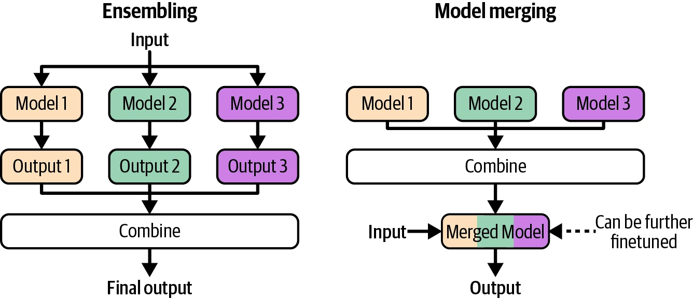
许多模型合并技术仍属实验性；随着社区更理解底层理论，它们可能过时。因此，本节聚焦高层合并方法，而非某一种具体技术。
模型合并方法的差别在于怎样组合组成模型的参数。这里介绍求和、层堆叠、拼接三种方法，图 7-14 展示它们的高层差异。
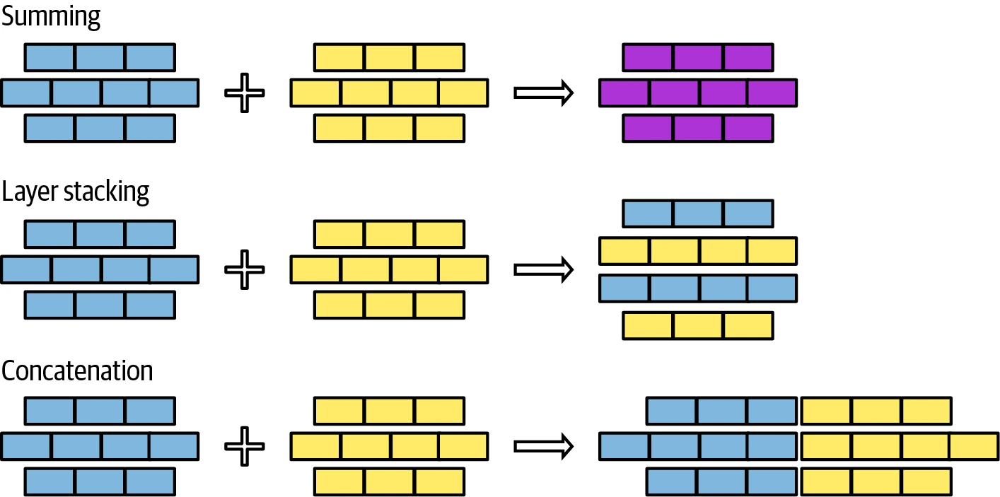
合并模型时可以混用这些方法，例如对一部分层求和、堆叠另一部分层。下面逐一介绍。
求和 PDF 669–675
Summing
这种方法把组成模型的权重值相加。本节讨论两种求和方法：线性组合与球面线性插值。如果两个模型的参数尺度不同——例如一个模型参数值大得多——可以在求和前重新缩放，让二者参数落在相同范围。
线性组合（Linear combination）
线性组合包括普通平均与加权平均。给定模型 A、B，加权平均为：
Merge(A, B) = (wAA + wBB) / (wA + wB)
图 7-15 展示在 wA = wB = 1 时怎样线性组合两个层。
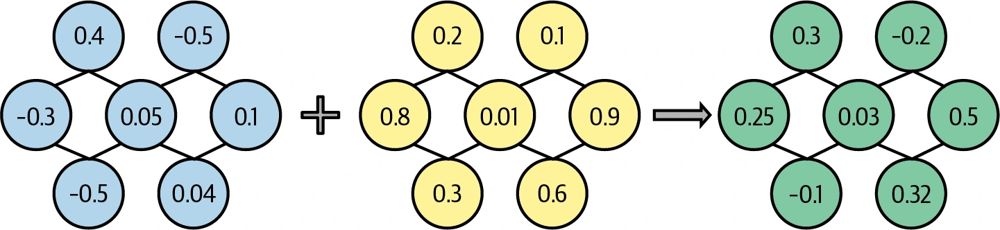
考虑到线性组合如此简单，它的效果好得令人惊讶。30早在 1990 年代初，就有人研究把多个模型线性组合成更好模型的想法（Perrone，1993）；联邦学习也经常使用线性组合（Wang 等，2020）。
可以线性组合整个模型，也可以只组合一部分。Model soups（Wortsman 等，2022）表明，对多个微调模型的完整权重取平均可以提高准确率，而不增加推理时间。不过，更常见的是线性组合特定组件，例如适配器。
理论上任何模型集合都可线性组合，但它对在同一基础模型上微调得到的模型最有效。这种情况下，可用任务向量理解线性组合：模型为特定任务微调以后，从微调模型减去基础模型，应得到一个捕获该任务本质的向量。任务向量也叫增量参数；使用 LoRA 微调时，可以从 LoRA 权重构造任务向量。
任务向量让我们能做任务算术（Ilharco 等，2022）：相加两个任务向量以组合任务能力，或减去一个任务向量以降低特定能力。任务减法可以移除不需要的模型行为，例如人脸识别等侵入性能力，或预训练得到的偏见。
待合并组件架构和大小相同时，线性组合很直接；架构或大小不同也可能工作。例如一个模型的层更大，可以把其中一个或两个层投影到相同维度。
有些研究建议平均前先对齐模型，保证功能相关的参数被平均到一起，例如“Model Fusion via Optimal Transport”（Singh 与 Jaggi，2020）、“Git Re-Basin: Merging Models Modulo Permutation Symmetries”（Ainsworth 等，2022）和“Merging by Matching Models in Task Parameter Subspaces”（Tam 等，2023）。组合已对齐参数很合理，但对齐很难，所以没有朴素线性组合常见。
球面线性插值（Spherical linear interpolation，SLERP）
另一种常见求和方法是 SLERP，来自同名数学运算 Spherical LinEar inteRPolation。
说明
插值指根据已知值估计未知值。在模型合并中，未知值是合并模型，已知值是组成模型。线性组合是一种插值，SLERP 是另一种。
SLERP 公式数学性较强，而且模型合并工具通常已经实现，所以这里不展开。直观地，可以把每个待合并组件（向量）想成球面上的点。合并两个向量时，先沿球面画出两点间最短路径，就像沿地球表面画两座城市间的最短路线。合并向量是这条最短路径上的某一点。
点落在路径哪里取决于插值因子，取值在 0 到 1 之间。小于 0.5 会让合并向量更靠近第一个向量，也就是第一个任务向量贡献更多；0.5 则选择正中点，即图 7-16 的蓝点。
数学运算 SLERP 只为两个向量定义，因此一次只能合并两个。如果要合并更多向量，可以顺序执行：先合并 A 与 B，再把结果与 C 合并。
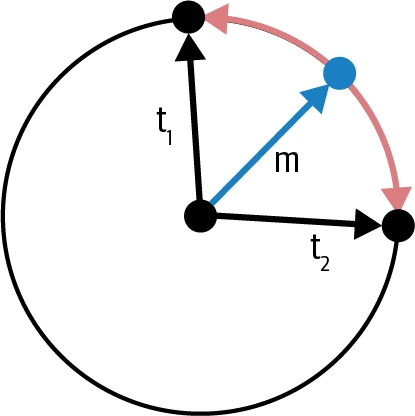
剪除冗余任务专属参数（Pruning redundant task-specific parameters）
微调会调整模型许多参数，但大部分调整很小，对任务表现贡献不大。没有贡献的调整视为冗余。
Yadav 等（2023）在论文“TIES-Merging: Resolving Interference When Merging Models”中表明，可以把很大比例的任务向量参数重置，而性能只轻微下降，如图 7-17。重置指把微调参数改回基础模型原始值，相当于把对应任务向量参数设为零。任务向量正是微调模型减去基础模型的结果。31
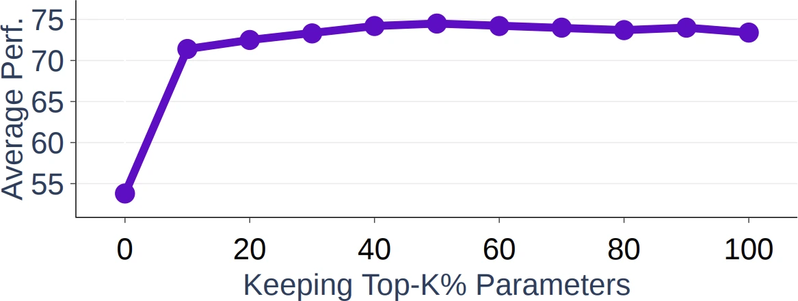
冗余参数对单个模型无害，却可能损害合并模型。TIES（Yadav 等，2023）和 DARE（Yu 等，2023）等合并技术，会在合并前从任务向量剪除冗余参数。32两篇论文都表明，这能显著提高最终合并模型的质量。
要合并的模型越多，剪枝越重要，因为一个任务的冗余参数干扰其他任务的机会越多。33
层堆叠 PDF 675–679
Layer Stacking
层堆叠从一个或多个模型取不同层，再把它们叠起来。例如，可以取模型 1 的第一层和模型 2 的第二层。这种方法也叫 passthrough 或 frankenmerging，可以创建拥有独特架构和参数数量的模型。与求和不同，层堆叠得到的模型通常需要继续微调才能表现良好。
Frankenmerging 的早期成功案例之一是 Goliath-120B（alpindale，2023），它由两个微调 Llama 2-70B 模型 Xwin 与 Euryale 合并而来，从每个模型的 80 层中取 72 层再合并。
层堆叠也能像“Sparse Upcycling: Training Mixture-of-Experts from Dense Checkpoints”（Komatsuzaki 等，2022）那样，用来训练专家混合（MoE）模型。与其从零训练 MoE，不如从预训练模型出发，复制某些层或模块，再加入路由器，把每个输入发送给最合适的副本。随后继续训练合并模型和路由器以改善表现，过程见图 7-18。
Komatsuzaki 等表明，层堆叠能产生比从零训练的 MoE 更强的模型。Together AI 使用这种方法混合六个较弱开源模型，创建 Mixture-of-Agents，在一些基准上达到可比 OpenAI GPT-4o 的表现（Wang 等，2024）。
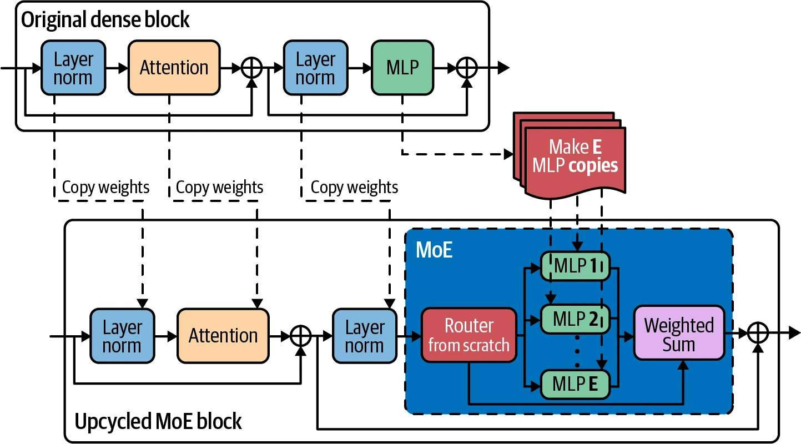
层堆叠的另一个有趣用例是模型扩缩（model upscaling）：研究怎样用较少资源创建更大的模型。有时你希望得到比现有模型更大的模型，通常因为更大模型表现更好。例如团队最初训练一个能装进 40 GB GPU 的模型，后来获得 80 GB 新机器，可以服务更大模型。与其从零训练，不如通过层堆叠从现有模型创建更大模型。
一种层扩缩方法是深度扩缩。Kim 等（2023）用它从一个 32 层、70 亿参数模型创建 SOLAR 10.7B，步骤如下：
- 复制原预训练模型。
- 合并两个副本：对一部分层求和——把两层变成一层——其余层堆叠。精心选择求和层数以匹配目标模型大小。SOLAR 10.7B 对 16 层求和，因此最终层数为 32 × 2 − 16 = 48。
- 继续训练放大后的模型，直至目标表现。
图 7-19 展示这个过程。
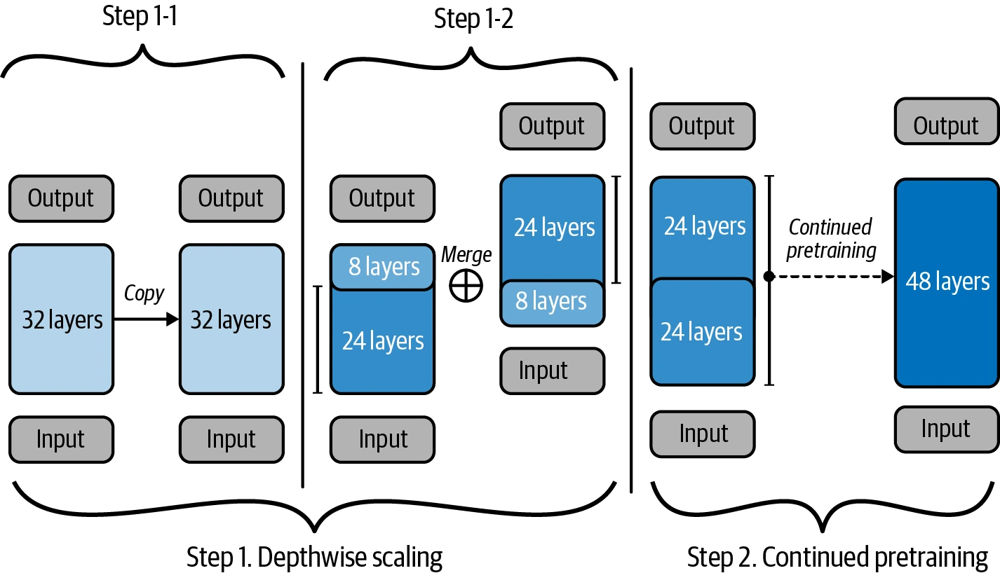
拼接 PDF 679–680
Concatenation
除了以各种方式相加组成模型的参数，还可以直接拼接。合并组件的参数数等于全部组成组件参数数之和。若合并秩分别为 r1 与 r2 的两个 LoRA 适配器，合并适配器的秩就是 r1 + r2，如图 7-20。
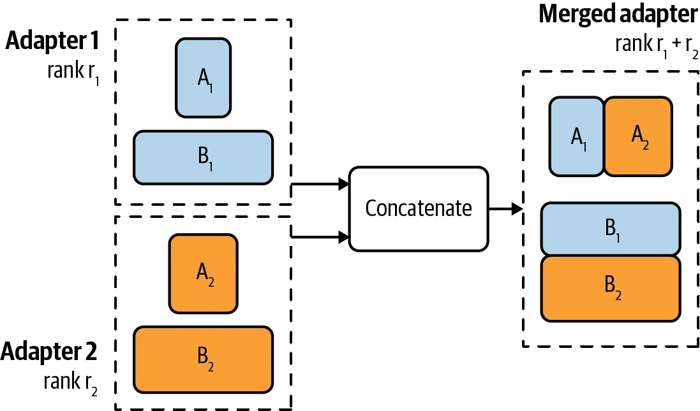
不推荐拼接，因为与分别服务不同模型相比，它并不降低显存。拼接可能带来更好表现，但增量表现未必值得付出额外参数。34
微调实用策略 PDF 680–688
Finetuning Tactics
本章已经讨论多种微调方法、它们解决什么问题以及怎样工作。最后一部分聚焦更实用的微调策略。
微调框架与基础模型 PDF 680–684
Finetuning Frameworks and Base Models
微调周围的许多事情——决定是否微调、获取数据、维护微调模型——都很难，但实际微调过程比较直接。需要选择三件事：基础模型、微调方法和微调框架。
基础模型（Base models）
第 4 章已经介绍模型选择标准，它们同时适用于提示方法与微调，包括模型大小、许可证和基准表现。AI 项目初期仍在探索任务可行性时，最好从负担得起的最强模型开始。如果最强模型都难以产生好结果，弱模型多半更差；如果最强模型满足需求，再探索较弱模型，并用初始模型作为比较基准。
不同项目的微调起始模型不同。OpenAI 微调最佳实践文档给出两条开发路径示例：渐进路径和蒸馏路径。
渐进路径如下：
- 先用最便宜、最快的模型测试微调代码，确认代码按预期工作。35
- 通过微调中等模型测试数据。如果增加数据后训练损失仍不下降，可能存在问题。
- 使用最佳模型多做几轮实验，看看性能能推到多高。
- 得到良好结果后，对全部模型各运行一次训练，绘制价格—性能前沿，选择对用例最合理的模型。
蒸馏路径可以如下：
- 从小数据集和负担得起的最强模型开始，用小数据集训练出尽可能好的模型。基础模型已经很强，因此只需较少数据就能取得良好表现。
- 使用这个微调模型生成更多训练数据。
- 用新数据集训练一个更便宜的模型。
微调通常发生在提示工程实验之后。理想情况下，开始微调时你已经相当了解不同模型的行为，应根据这些理解规划微调开发路径。
微调方法（Finetuning methods）
LoRA 等适配器技术成本低，但表现通常达不到全量微调。如果刚开始微调，可以先尝试 LoRA，之后再尝试全量微调。
微调方法也取决于数据量。根据基础模型和任务不同，全量微调通常至少需要数千个示例，而且往往更多；PEFT 用小得多的数据集就可能表现良好。如果只有几百个示例，全量微调未必胜过 LoRA。
选择方法时，还要考虑需要多少个微调模型、准备怎样服务。LoRA 等适配器方法能更高效地服务共享同一基础模型的多个模型：只需服务一个完整基础模型；全量微调则必须服务多个完整模型。
微调框架（Finetuning frameworks）
最简单的微调方式是使用微调 API：上传数据、选择基础模型，再取回微调模型。和推理 API 一样，微调 API 可以由模型提供商、云服务提供商或第三方提供。
这种方式的一个限制是只能使用 API 支持的基础模型；另一个限制是 API 可能没有暴露实现最佳性能所需的全部旋钮。微调 API 适合追求快速简单的人，对希望深度定制的人可能令人受挫。
也可以使用 LLaMA-Factory、unsloth、PEFT、Axolotl、LitGPT 等优秀框架。它们支持广泛微调方法，尤其是适配器技术。若要全量微调，许多基础模型会在 GitHub 提供可克隆并用自有数据运行的开源训练代码。Llama Police 提供更全面、更新及时的微调框架与模型仓库清单。
自行微调更灵活，但必须配置所需算力。若只做适配器技术，中档 GPU 对大多数模型可能足够；需要更多算力时，可以选择与云提供商无缝集成的框架。
使用多台机器微调时，需要 DeepSpeed、PyTorch Distributed、ColossalAI 等支持分布式训练的框架。
微调超参数 PDF 684–688
Finetuning Hyperparameters
根据基础模型和微调方法不同，可以调节许多超参数来提高微调效率。具体用例的超参数应查阅基础模型或微调框架文档。这里介绍几个经常出现的重要超参数。
学习率（Learning rate）
学习率决定每个学习步骤中模型参数变化多快。如果把学习看成寻找通往目标的路径，学习率就是步长。步长太小，到达目标可能太久；步长太大，可能跨过目标，模型因而永不收敛。
不存在通用最优学习率。必须实验不同值，通常在 1e-7 到 1e-3 之间，看哪个最好。一种常见做法是取预训练阶段结束时的学习率，再乘以 0.1 到 1 之间的常数。
损失曲线能提供线索。若曲线波动很大，学习率可能太高；若曲线稳定却下降很慢，学习率可能太低。在损失曲线仍保持稳定的前提下，尽可能提高学习率。
训练过程中可以改变学习率：初期用较大值，接近结束时用较小值。决定学习率怎样随训练过程变化的算法称为学习率计划（learning rate schedule）。
批大小（Batch size）
批大小决定模型每一步从多少个示例学习并更新权重。批次过小——例如少于 8——可能使训练不稳定。36更大批次能聚合不同示例的信号，产生更稳定、可靠的更新。
一般来说，批越大，模型遍历训练样本越快；但批越大，运行模型所需显存越多。因此，批大小受硬件限制。这正体现成本与效率的权衡：更昂贵的计算资源允许更快微调。
写作本书时，计算仍是微调瓶颈。模型往往很大、显存很紧张，只能使用小批次，导致权重更新不稳定。为解决这个问题，可以不在每个批次后立刻更新权重，而是跨多个批次累积梯度，等得到足够可靠的梯度后再更新一次。这项技术叫梯度累积（gradient accumulation）。37
当计算成本不是最重要因素时，可以实验不同批大小，观察哪个带来最佳模型表现。
Epoch 数量（Number of epochs）
一个 epoch 指完整遍历一次训练数据；epoch 数决定每个训练样本被学习多少次。
小数据集可能比大数据集需要更多 epoch。拥有数百万样本的数据集可能 1–2 个 epoch 就够；只有数千样本的数据集在 4–10 个 epoch 后仍可能继续改善。
训练损失与验证损失之差可以提供线索。如果二者仍在稳定下降，增加 epoch（以及更多数据）可能有益；若训练损失继续下降、验证损失却上升，说明模型对训练数据过拟合，可以减少 epoch。
提示损失权重（Prompt loss weight）
指令微调的每个样本由提示和回答组成，二者都可以计入训练损失。但推理时提示通常由用户提供，模型只需生成回答。因此，训练时回答词元对损失的贡献应高于提示词元。
提示损失权重决定提示相对于回答对损失贡献多少。权重为 100% 时，提示与回答贡献相同，模型同等学习二者；权重为 0% 时，只从回答学习。默认值通常是 10%，即模型从提示学少量信息，主要从回答学习。
总结 PDF 688–689
Summary
除了评估两章，微调是作者最难写的一章。它横跨新旧概念——迁移学习与 PEFT，基础与实验性概念——低秩分解与模型合并，以及数学计算和实用策略——显存估算与超参数调节。既要把这些不同方面组织成连贯结构，又要保持可读性，非常困难。
微调过程本身并不难，许多框架会代为处理训练，甚至能推荐常见微调方法和合理默认超参数。但微调周围的上下文很复杂，第一件事就是判断是否真的应该微调。
本章从微调与不微调的理由开始，也回答作者被问过很多次的问题：何时微调，何时做 RAG。
微调早期与预训练相似，二者都更新模型全部权重。但随着模型增大，全量微调对大多数实践者变得不现实。微调要更新的参数越多，显存要求越高；多数实践者没有足够的硬件、时间和数据来全量微调基础模型。
许多微调技术出于同一动机：以最小显存占用获得很强的表现。PEFT 通过减少可训练参数来降低显存；量化训练则通过减少表示每个值所需的位数来缓解瓶颈。
概览 PEFT 后，本章深入 LoRA 的原理与工作方式。LoRA 具有许多让实践者喜爱的属性：不仅参数高效、数据高效，也具有模块化特征，能更容易地服务和组合多个 LoRA 模型。
组合微调模型的想法把本章带到模型合并。它希望把多个模型合成一个比各模型分别使用更好的模型。本章讨论模型合并从端侧部署到模型扩缩的多种用例，以及合并的通用方法。
作者常听实践者说，微调容易，为微调获得数据才难。取得高质量带标注数据——尤其指令数据——确实充满挑战。下一章将深入这些挑战。
章末注释 PDF 690–693
Notes
- 有些人把这种现象称为 alignment tax（Bai 等，2020），但这个词可能与“为了符合人类偏好而付出的代价”混淆。
- 很多企业不愿更换它们认为“已经够好”的技术。如果所有公司都迅速采用更优方案，传真机现在早该绝迹了。
- 作者也见过一些工程师明知并非必须微调，却仍坚持要做，因为他们想学习微调。作为喜欢学习新技能的工程师，作者很欣赏这种心态；但站在领导岗位上，很难区分微调是“需要”还是“想要”。
- 0314 表示这个 GPT-4 版本的发布日期；原注写作 2024 年 3 月 14 日。具体日期戳很重要，因为不同版本表现差异显著。
- 一些人——例如 Llama 3.1 论文作者（Dubey 等，2024）——遵循这样的原则：“后训练应让模型知道自己知道什么，而不是增加知识。”
- 除反向传播外，训练神经网络的一条有前景路径是进化策略。Maheswaranathan 等描述的一个例子，把随机搜索与代理梯度结合，而不是使用真实梯度更新权重。另一种有趣方法是直接反馈对齐（Arild Nøkland，2016）。
- 参数若不可训练，就不需要更新，也就不必计算梯度。
- 有人会说，没见过“RuntimeError: CUDA out of memory”就还不算真正做过 AI。
- 若想进一步了解推理显存计算，可阅读 Carol Chen 的“Transformer Inference Arithmetic”（kipply 的博客，2022 年 3 月）。
- 若想进一步了解训练显存计算，可阅读 EleutherAI 的“Transformer Math 101”（Anthony 等，2023 年 4 月）。
- Google 推出 BFloat16 时，把它称为“Cloud TPU 高性能的秘密”。
- 整数格式也称为定点格式（fixed point formats）。
- 范围位称为指数（exponents），精度位称为有效数（significands）。
- 格式名末尾的数字通常表示位数，但 TF32 实际是 19 位，而不是 32 位。作者认为这个名称是为了暗示它与 FP32 的功能兼容性；但说实话，为什么叫 TF32 而不叫 TF19，一直让作者夜不能寐。一位 NVIDIA 前同事猜测，人们可能会怀疑 19 位这种奇怪格式，所以叫 TF32 显得更亲切。
- FP16 与 BF16 的混淆在 Llama 3.1 上仍然继续。可以参阅 X 与 Threads 上的相关讨论，以及 llama.cpp 的 BF16／FP16 基准、Bloke 和 Raschka 的文章。
- 设计数值格式是一门迷人的学科。如果能创建不损害系统质量的低精度格式，就能让系统更便宜、更快，进而开启新用例。
- Transformer 模型显存占用的另一大来源是 KV 缓存，第 9 章会讨论。
- 遵循全部 IEEE 原则的最小浮点格式是 4 位。
- Xnor-Net 论文作者后来创办专注模型压缩的初创公司 Xnor.ai；2020 年初，该公司据报道被 Apple 以 2 亿美元收购。
- 训练期间，模型权重经过多步更新；微小舍入变化可能不断累积，让模型难以达到目标表现。损失值也必须精确计算，微小变化就可能把参数更新指向错误方向。
- 作者的个人经历是，在 NVIDIA 时团队相当一部分工作都与混合精度训练有关。参见“Huyen 等，Mixed Precision Training for NLP and Speech Recognition with OpenSeq2Seq”，NVIDIA Developer Technical Blog，2018 年 10 月。
- 部分微调通常微调最靠近输出层的层，因为这些层往往更具任务专属性；较早的层倾向于捕获更通用的特征。
- 作者从未遇到过一个能当场解释这些软提示技术差异的人。
- 要为模型有效使用 LoRA，必须理解模型架构。第 2 章已经介绍过若干 Transformer 模型的权重组成；具体模型的确切权重组成请参阅其论文。
- 写作本书时，Fireworks 等部分微调框架允许的 LoRA 最大秩是 32。不过，这个限制不太可能出于性能，更可能来自硬件显存约束。
- 可以使用“adapter”“peft”或“LoRA”标签搜索这些适配器。
- QLoRA 不是唯一的量化 LoRA 工作。许多研究实验室一直在研究量化 LoRA，只是没有公开讨论。
- 作者的《Designing Machine Learning Systems》有一节专门讨论“云端与边缘上的 ML”。
- 可以在《Designing Machine Learning Systems》中进一步阅读模型集成方法。
- 平均不仅适用于权重，也适用于嵌入。例如，对一个句子，可以用词嵌入算法为每个词生成向量，再对所有词向量取平均得到句子嵌入。作者刚接触 ML 时，无法相信平均这种简单方法竟然有效。正确使用简单组件，却能创造 AI 这样奇妙得令人困惑的事物，像魔法一样。
- 假设是：微调期间变化最大的参数，对目标任务最关键。
- TIES 是“TrIm, Elect Sign, and merge”的缩写，DARE 是“Drop And REscale”的缩写。作者表示，这些缩写也让他感到痛苦。
- 任务向量被剪枝后会更稀疏，但微调模型本身不会。这里剪枝的目的不是降低显存或推理延迟，而是提高性能。
- 作者曾长时间纠结是否应在书中加入拼接技术，最后为了完整性决定保留。
- 作者大学时犯过一个痛苦错误：让模型通宵训练，八小时后却因为尝试把检查点保存到不存在的文件夹而崩溃，全部进度丢失。
- 小批次导致训练不稳定是普遍共识，但作者没能找到好的原因解释；如果读者有相关文献，欢迎分享。
- 作者尝试寻找首次提出梯度累积的论文，但没有找到。早在 2016 年，“Ako: Decentralised Deep Learning with Partial Gradient Exchange”（Watcharapichat 等，ACM Symposium on Cloud Computing，2016）就提到它在深度学习中的使用。这个概念似乎源自分布式训练：不同机器计算的梯度需要累积后再用于更新模型权重。